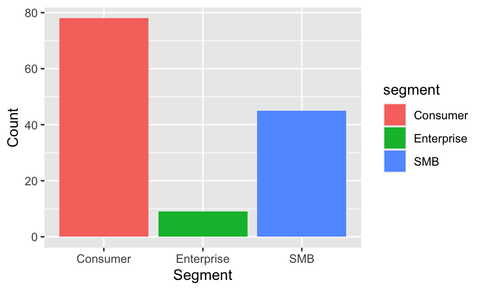
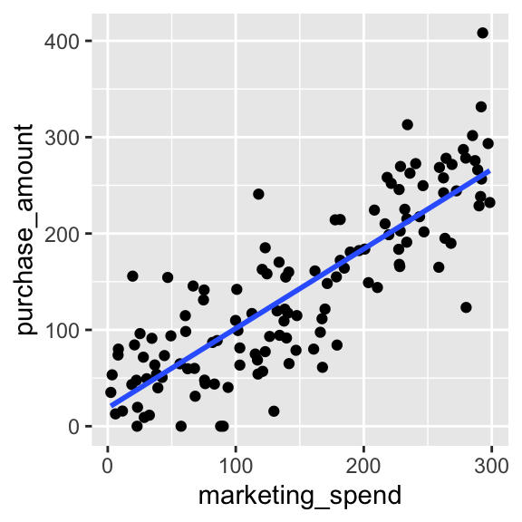
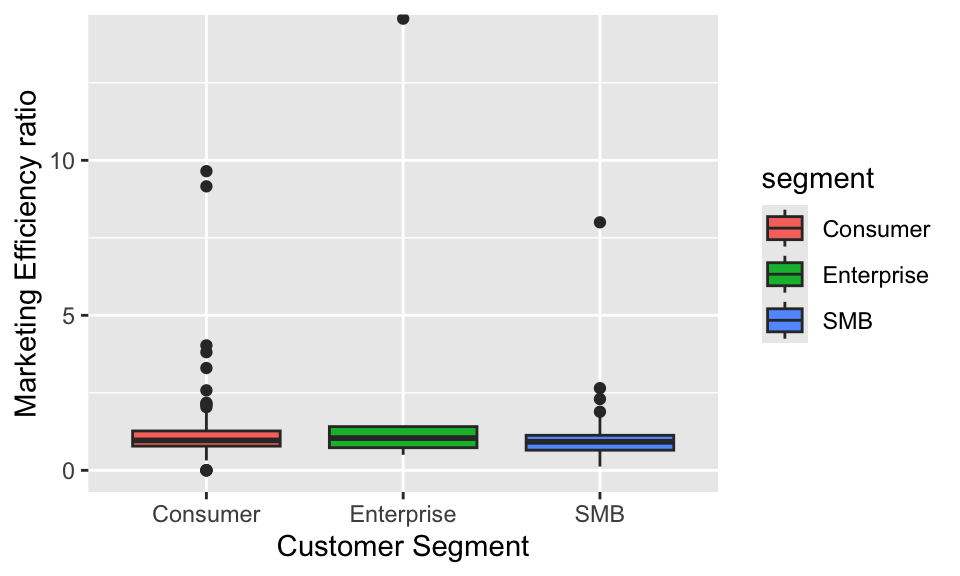

Marketing Spend on Consumer Purchase Behaviour
Introduction
Marketing campaigns are a key promotional tool for driving sales. This report examines the relationship between the costs of personalized marketing campaigns and customer purchase amount over the last quarter. The aim is to evaluate the effectiveness of these marketing activities and provide evidence to inform future decision-making.
Research Question
This study investigates whether higher marketing_spend is associated with increased purchase_amount at the customer level. The second objective is to examine which segment has the highest conversion efficiency from marketing to purchase.
Dataset Introduction
Describing data.
The dataset records customer information and measures how customers are influenced by marketing campaigns. It includes details such as a unique identifier, sign-up date, customer segment, marketing expenditure, purchase behaviour, visit frequency, and additional information. Overall, this dataset provides a comprehensive record of customer activity and engagement, which can be used to analyse the relationship between marketing campaigns and customer purchasing behaviour.
Data Clean. The data were cleaned by following steps. The signup_date variable was converted into a POSIXct format. Observations with missing values in variables (purchase_amount and marketing_spend) were removed. Missing values in the notes column were replaced by NA.
Dataset Description
The dataset contains 132 observations, and 7 variables. The dataset includes identifier, signup date, marketing cost, purchasing behavior, visit, some additional information and categories of customer that together describe the business campaigns. The customer_id in string type identifies each individual customer, while signup_date in date type records the date of customer sign-up. The numerical variables, which include marketing_spend, visits, and purchase_amount record the marketing cost, visit times, and customer purchase amount, respectively. The segment variable in string type record each category of customers into, such as Consumer, SMB, and Enterprise. Finally, the notes variable in string type provides additional information.
Figure 1 illustrates the distribution of customers across the three segments. The x-axis represents the customer segments (Consumer, Enterprise, and SMB), while the y-axis shows the total number of customers in each group. As shown in Figure 1, the Consumer segment has the largest number of customers, followed by SMB, while Enterprise represents the smallest group.
Table 1 below is a summary of categorical data organized by segment. The table shows the total number of customers in each category, as well as the average marketing spend, average purchase amount, and average number of visits. Table 1 shows that marketing spend is highest for SMB, followed by Consumer, and lowest for Enterprise. Purchase amount is highest for SMB, followed by Consumer, and lowest for Enterprise. The order of visits is the same as above. This indicates that SMB customers are generally more engaged and generate higher spending.
| segment | count | Avg_marketing | Avg_purchase | Avg_visits |
|---|---|---|---|---|
| Consumer | 78 | 146.12 | 141.87 | 5.24 |
| Enterprise | 9 | 128.55 | 122.78 | 4.22 |
| SMB | 45 | 156.11 | 144.29 | 5.44 |
Results
Figure 2 shows a positive linear association between marketing_spend and purchase_amount. This indicates that higher marketing expenditure is generally associated with higher customer spending. However, the dispersion of data points around the regression line suggests that there is substantial individual variation, implying that marketing spend is not the only factor influencing purchasing behaviour.

Figure 3 displays the marketing ratio for each of these three customer segments(ratio=divide purchase amount by marketing cost). Most data points fall between 0.5 and 1.5, and there are no significant differences among the three segments. In terms of the median, the Enterprise segment is higher than the other two segments, indicating that the Enterprise segment typically has a slightly more efficient marketing conversion ratio. Additionally, an examination of the outliers reveals that the Enterprise segment has some high outliers, suggesting that in certain cases, this category may achieve exceptionally high returns on marketing investment. In summary, the Enterprise segment demonstrates higher marketing efficiency and purchasing potential, but also exhibits relatively significant volatility.

Overall, returning to Section 2, the results indicate a positive linear association between marketing spend and purchase amount. This suggests that higher marketing spend is generally associated with increased purchase amount. In addition, the Enterprise segment demonstrates slightly higher conversion efficiency from marketing investment to purchase, although with greater variability.